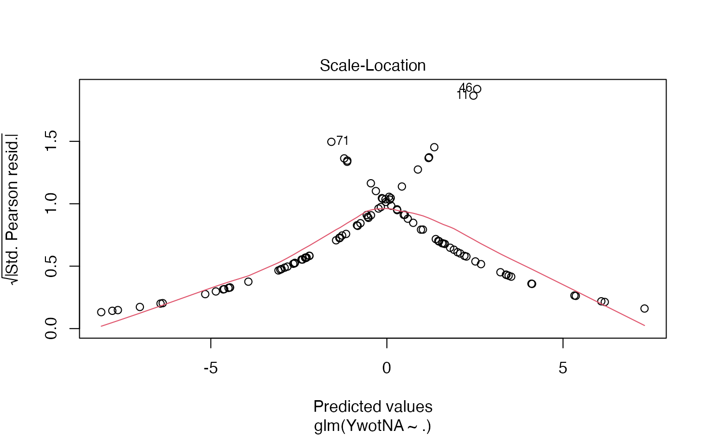
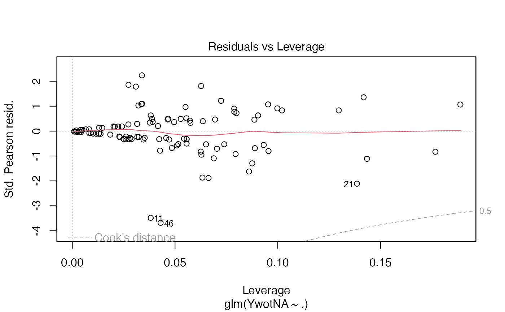

Partial least squares Regression generalized linear models
plsRglm.RdThis function implements Partial least squares Regression generalized linear models complete or incomplete datasets.
plsRglm(x, …) # S3 method for default plsRglmmodel(dataY,dataX,nt=2,limQ2set=.0975, dataPredictY=dataX,modele="pls",family=NULL,typeVC="none", EstimXNA=FALSE,scaleX=TRUE,scaleY=NULL,pvals.expli=FALSE, alpha.pvals.expli=.05,MClassed=FALSE,tol_Xi=10^(-12),weights, sparse=FALSE,sparseStop=TRUE,naive=FALSE,verbose=TRUE) # S3 method for formula plsRglmmodel(formula,data=NULL,nt=2,limQ2set=.0975, dataPredictY,modele="pls",family=NULL,typeVC="none", EstimXNA=FALSE,scaleX=TRUE,scaleY=NULL,pvals.expli=FALSE, alpha.pvals.expli=.05,MClassed=FALSE,tol_Xi=10^(-12),weights,subset, start=NULL,etastart,mustart,offset,method="glm.fit",control= list(), contrasts=NULL,sparse=FALSE,sparseStop=TRUE,naive=FALSE,verbose=TRUE) PLS_glm(dataY, dataX, nt = 2, limQ2set = 0.0975, dataPredictY = dataX, modele = "pls", family = NULL, typeVC = "none", EstimXNA = FALSE, scaleX = TRUE, scaleY = NULL, pvals.expli = FALSE, alpha.pvals.expli = 0.05, MClassed = FALSE, tol_Xi = 10^(-12), weights, method, sparse = FALSE, sparseStop=FALSE, naive=FALSE,verbose=TRUE) PLS_glm_formula(formula,data=NULL,nt=2,limQ2set=.0975,dataPredictY=dataX, modele="pls",family=NULL,typeVC="none",EstimXNA=FALSE,scaleX=TRUE, scaleY=NULL,pvals.expli=FALSE,alpha.pvals.expli=.05,MClassed=FALSE, tol_Xi=10^(-12),weights,subset,start=NULL,etastart,mustart,offset,method, control= list(),contrasts=NULL,sparse=FALSE,sparseStop=FALSE,naive=FALSE,verbose=TRUE)
Arguments
| x | a formula or a response (training) dataset |
|---|---|
| dataY | response (training) dataset |
| dataX | predictor(s) (training) dataset |
| formula | an object of class " |
| data | an optional data frame, list or environment (or object coercible by |
| nt | number of components to be extracted |
| limQ2set | limit value for the Q2 |
| dataPredictY | predictor(s) (testing) dataset |
| modele | name of the PLS glm model to be fitted ( |
| family | a description of the error distribution and link function to be used in the model. This can be a character string naming a family function, a family function or the result of a call to a family function. (See |
| typeVC | type of leave one out cross validation. For back compatibility purpose.
|
| EstimXNA | only for |
| scaleX | scale the predictor(s) : must be set to TRUE for |
| scaleY | scale the response : Yes/No. Ignored since non always possible for glm responses. |
| pvals.expli | should individual p-values be reported to tune model selection ? |
| alpha.pvals.expli | level of significance for predictors when pvals.expli=TRUE |
| MClassed | number of missclassified cases, should only be used for binary responses |
| tol_Xi | minimal value for Norm2(Xi) and \(\mathrm{det}(pp' \times pp)\) if there is any missing value in the |
| weights | an optional vector of 'prior weights' to be used in the fitting process. Should be |
| subset | an optional vector specifying a subset of observations to be used in the fitting process. |
| start | starting values for the parameters in the linear predictor. |
| etastart | starting values for the linear predictor. |
| mustart | starting values for the vector of means. |
| offset | this can be used to specify an a priori known component to be included in the linear predictor during fitting. This should be |
| method | For a glm model ( |
| control | a list of parameters for controlling the fitting process. For |
| contrasts | an optional list. See the |
| sparse | should the coefficients of non-significant predictors (< |
| sparseStop | should component extraction stop when no significant predictors (< |
| naive | Use the naive estimates for the Degrees of Freedom in plsR? Default is |
| verbose | Should details be displayed ? |
| … | arguments to pass to |
Details
There are seven different predefined models with predefined link functions available :
"pls"ordinary pls models
"pls-glm-Gamma"glm gaussian with inverse link pls models
"pls-glm-gaussian"glm gaussian with identity link pls models
"pls-glm-inverse-gamma"glm binomial with square inverse link pls models
"pls-glm-logistic"glm binomial with logit link pls models
"pls-glm-poisson"glm poisson with log link pls models
"pls-glm-polr"glm polr with logit link pls models
Using the "family=" option and setting "modele=pls-glm-family" allows changing the family and link function the same way as for the glm function. As a consequence user-specified families can also be used.
- The
gaussianfamily accepts the links (as names)
identity,logandinverse.- The
binomialfamily accepts the links
logit,probit,cauchit, (corresponding to logistic, normal and Cauchy CDFs respectively)logandcloglog(complementary log-log).- The
Gammafamily accepts the links
inverse,identityandlog.- The
poissonfamily accepts the links
log,identity, andsqrt.- The
inverse.gaussianfamily accepts the links
1/mu^2,inverse,identityandlog.- The
quasifamily accepts the links
logit,probit,cloglog,identity,inverse,log,1/mu^2andsqrt.- The function
power can be used to create a power link function.
A typical predictor has the form response ~ terms where response is the (numeric) response vector and terms is a series of terms which specifies a linear predictor for response. A terms specification of the form first + second indicates all the terms in first together with all the terms in second with any duplicates removed.
A specification of the form first:second indicates the the set of terms obtained by taking the interactions of all terms in first with all terms in second. The specification first*second indicates the cross of first and second. This is the same as first + second + first:second.
The terms in the formula will be re-ordered so that main effects come first, followed by the interactions, all second-order, all third-order and so on: to avoid this pass a terms object as the formula.
Non-NULL weights can be used to indicate that different observations have different dispersions (with the values in weights being inversely proportional to the dispersions); or equivalently, when the elements of weights are positive integers w_i, that each response y_i is the mean of w_i unit-weight observations.
The default estimator for Degrees of Freedom is the Kramer and Sugiyama's one which only works for classical plsR models. For these models, Information criteria are computed accordingly to these estimations. Naive Degrees of Freedom and Information Criteria are also provided for comparison purposes. For more details, see N. Kraemer and M. Sugiyama. (2011). The Degrees of Freedom of Partial Least Squares Regression. Journal of the American Statistical Association, 106(494), 697-705, 2011.
Value
Depends on the model that was used to fit the model. You can generally at least find these items.
Number of observations
Number of predictors
Number of requested components
raw weights (before L2-normalization)
L2 normed weights (to be used with deflated matrices of predictor variables)
modified weights (to be used with original matrix of predictor variables)
PLS components
loadings of the predictor variables
coefficients of the PLS components
scores of the response variable
predicted response values for the dataX set
residuals of the deflated response on the standardized scale
scaled response vector
is there any NA value in the response vector
indicatrix vector of missing values in RepY
deflated scaled response vector
scaled matrix of predictors
is there any NA value in the predictor matrix
indicator of non-NA values in the predictor matrix
deflated predictor matrix
response values with NA replaced with 0
residual sum of squares (original scale)
residual sum of squares (scaled scale)
R2 coefficient value on the standardized scale
R2 coefficient value on the original scale
individual PRESS value for each observation (scaled scale)
total PRESS value for all observations (scaled scale)
cumulated Q2 (standardized scale)
glm family used to fit PLSGLR model
PLS components for the dataset on which prediction was requested
type of leave one out cross-validation used
predictor values
response values
weights of the observations
number of components that were computed
AIC vs number of components
BIC vs number of components
matrix of the coefficients of the predictors
value of the intercept (scaled scale)
Vector of standardized regression coefficients
Vector of regression coefficients (used with the original data scale)
residuals of the PLS model
residuals of the deflated response on the standardized scale
table of Information Criteria:
AICAIC vs number of components
BICBIC vs number of components
MissClassedNumber of miss classed results
Chi2_Pearson_YQ2 value (standardized scale)
RSSresidual sum of squares (original scale)
R2R2 coefficient value on the original scale
R2residYR2 coefficient value on the standardized scale
RSSresidYresidual sum of squares (scaled scale)
predicted response values for supplementary dataset (standardized scale)
predicted response values for supplementary dataset (original scale)
estimated values for missing values in the predictor matrix (standardized scale)
final GLR model on the PLS components
predictor matrix with missing values replaced with 0
call
AIC.std vs number of components (AIC computed for the standardized model
References
Nicolas Meyer, Myriam Maumy-Bertrand et Frederic Bertrand (2010). Comparaison de la regression PLS et de la regression logistique PLS : application aux donnees d'allelotypage. Journal de la Societe Francaise de Statistique, 151(2), pages 1-18. http://publications-sfds.math.cnrs.fr/index.php/J-SFdS/article/view/47
Note
Use cv.plsRglm to cross-validate the plsRglm models and bootplsglm to bootstrap them.
See also
See also plsR.
Examples
data(Cornell) XCornell<-Cornell[,1:7] yCornell<-Cornell[,8] modplsglm <- plsRglm(yCornell,XCornell,10,modele="pls-glm-gaussian")#> ____************************************************____ #> #> Family: gaussian #> Link function: identity #> #> ____Component____ 1 ____ #> ____Component____ 2 ____ #> ____Component____ 3 ____ #> ____Component____ 4 ____ #> ____Component____ 5 ____ #> ____Component____ 6 ____ #> Warning : 1 2 3 4 5 6 7 < 10^{-12} #> Warning only 6 components could thus be extracted #> ____Predicting X without NA neither in X nor in Y____ #> ****________________________________________________**** #>#To retrieve the final GLR model on the PLS components finalmod <- modplsglm$FinalModel #It is a glm object. plot(finalmod)#> Warning: not plotting observations with leverage one: #> 11#> Warning: not plotting observations with leverage one: #> 11#Cross validation cv.modplsglm<-cv.plsRglm(Y~.,data=Cornell,6,NK=100,modele="pls-glm-gaussian", verbose=FALSE) res.cv.modplsglm<-cvtable(summary(cv.modplsglm))#> ____************************************************____ #> #> Family: gaussian #> Link function: identity #> #> ____Component____ 1 ____ #> ____Component____ 2 ____ #> ____Component____ 3 ____ #> ____Component____ 4 ____ #> ____Component____ 5 ____ #> ____Component____ 6 ____ #> ____Predicting X without NA neither in X or Y____ #> ****________________________________________________**** #> #> #> NK: 1, 2, 3, 4, 5, 6, 7, 8, 9, 10 #> NK: 11, 12, 13, 14, 15, 16, 17, 18, 19, 20 #> NK: 21, 22, 23, 24, 25, 26, 27, 28, 29, 30 #> NK: 31, 32, 33, 34, 35, 36, 37, 38, 39, 40 #> NK: 41, 42, 43, 44, 45, 46, 47, 48, 49, 50 #> NK: 51, 52, 53, 54, 55, 56, 57, 58, 59, 60 #> NK: 61, 62, 63, 64, 65, 66, 67, 68, 69, 70 #> NK: 71, 72, 73, 74, 75, 76, 77, 78, 79, 80 #> NK: 81, 82, 83, 84, 85, 86, 87, 88, 89, 90 #> NK: 91, 92, 93, 94, 95, 96, 97, 98, 99, 100 #> #> CV Q2Chi2 criterion: #> 0 1 2 #> 0 40 60 #> #> CV PreChi2 criterion: #> 1 2 3 4 5 #> 0 27 40 31 2plot(res.cv.modplsglm)#If no model specified, classic PLSR model modpls <- plsRglm(Y~.,data=Cornell,6)#> ____************************************************____ #> #> Model: pls #> #> ____Component____ 1 ____ #> ____Component____ 2 ____ #> ____Component____ 3 ____ #> ____Component____ 4 ____ #> ____Component____ 5 ____ #> ____Component____ 6 ____ #> ____Predicting X without NA neither in X or Y____#>#> ****________________________________________________**** #>modpls#> Number of required components: #> [1] 6 #> Number of successfully computed components: #> [1] 6 #> Coefficients: #> [,1] #> Intercept 88.7107982 #> X1 -54.3905712 #> X2 -2.7879678 #> X3 52.5411315 #> X4 -11.5306977 #> X5 -0.9605822 #> X6 11.5900307 #> X7 28.2104803 #> Information criteria and Fit statistics: #> AIC RSS_Y R2_Y R2_residY RSS_residY AIC.std #> Nb_Comp_0 82.01205 467.796667 NA NA 11.00000000 37.010388 #> Nb_Comp_1 53.15173 35.742486 0.9235940 0.9235940 0.84046633 8.150064 #> Nb_Comp_2 41.08283 11.066606 0.9763431 0.9763431 0.26022559 -3.918831 #> Nb_Comp_3 32.06411 4.418081 0.9905556 0.9905556 0.10388893 -12.937550 #> Nb_Comp_4 33.76477 4.309235 0.9907882 0.9907882 0.10132947 -11.236891 #> Nb_Comp_5 33.34373 3.521924 0.9924713 0.9924713 0.08281624 -11.657929 #> Nb_Comp_6 35.25533 3.496074 0.9925265 0.9925265 0.08220840 -9.746328 #> DoF.dof sigmahat.dof AIC.dof BIC.dof GMDL.dof DoF.naive #> Nb_Comp_0 1.000000 6.5212706 46.0708838 47.7893514 27.59461 1 #> Nb_Comp_1 2.740749 1.8665281 4.5699686 4.9558156 21.34020 2 #> Nb_Comp_2 5.085967 1.1825195 2.1075461 2.3949331 27.40202 3 #> Nb_Comp_3 5.121086 0.7488308 0.8467795 0.9628191 24.40842 4 #> Nb_Comp_4 5.103312 0.7387162 0.8232505 0.9357846 24.23105 5 #> Nb_Comp_5 6.006316 0.7096382 0.7976101 0.9198348 28.21184 6 #> Nb_Comp_6 7.000002 0.7633343 0.9711322 1.1359501 33.18348 7 #> sigmahat.naive AIC.naive BIC.naive GMDL.naive #> Nb_Comp_0 6.5212706 46.0708838 47.7893514 27.59461 #> Nb_Comp_1 1.8905683 4.1699567 4.4588195 18.37545 #> Nb_Comp_2 1.1088836 1.5370286 1.6860917 17.71117 #> Nb_Comp_3 0.7431421 0.7363469 0.8256118 19.01033 #> Nb_Comp_4 0.7846050 0.8721072 0.9964867 24.16510 #> Nb_Comp_5 0.7661509 0.8804809 1.0227979 28.64206 #> Nb_Comp_6 0.8361907 1.1070902 1.3048716 33.63927modpls$tt#> Comp_1 Comp_2 Comp_3 Comp_4 Comp_5 Comp_6 #> 1 2.05131893 0.8217956 1.5820453 -0.61853330 0.01484108 -0.0004847062 #> 2 2.47466082 0.6488170 0.1093962 0.86769742 0.17352091 -0.0102365260 #> 3 2.33108430 0.9267035 -0.1729233 0.62591457 -0.21889565 0.0099484391 #> 4 2.03715457 -1.5957365 -0.5015374 0.52325099 0.10077311 -0.0020048043 #> 5 -0.06810714 -0.2178157 -2.9559035 -0.16013960 -0.08723778 -0.0005266324 #> 6 1.61381268 -1.4227579 0.9711117 -0.96297973 -0.05790672 0.0077470155 #> 7 -2.20425338 -0.1781166 0.2375256 0.05862843 0.16192611 0.0009678124 #> 8 -1.99354688 0.1006045 0.1184228 0.29283911 0.04069929 0.0069439383 #> 9 -2.08759464 0.1485897 0.3546081 0.06867502 0.06838481 0.0055358177 #> 10 -1.91577439 0.3184087 0.1964777 0.29953683 -0.02166158 0.0099892751 #> 11 -2.07628408 -0.4606368 1.0311837 0.30917216 -0.23179633 -0.0192401473 #> 12 -0.16247078 0.9101447 -0.9704071 -1.30406190 0.05735276 -0.0086394819modpls$uscores#> [,1] [,2] [,3] [,4] [,5] [,6] #> 1 3.2182907 2.05967331 3.2801365 7.5269739 0.60581642 0.22391305 #> 2 2.9319848 0.80716434 0.4195899 1.3749676 0.03772786 -0.05145026 #> 3 2.5502436 0.38681011 -1.4306130 -5.5748469 -0.46117731 -0.09179745 #> 4 1.0869021 -1.67716952 -0.2157816 1.2666436 0.05528931 -0.01723324 #> 5 -0.6309334 -0.99337301 -2.0550769 3.9930120 0.30888775 0.15008693 #> 6 0.8324080 -1.37915791 0.1155316 -3.7924524 -0.21044006 -0.05779295 #> 7 -2.1260866 0.13796217 0.8375477 2.6596630 0.19345013 0.01194405 #> 8 -1.7443454 0.43983381 0.8988921 3.4595151 0.23551932 0.07381483 #> 9 -1.9670278 0.21279720 0.1701376 -0.8176856 -0.06592246 -0.05088731 #> 10 -1.7125336 0.35871439 0.1068023 -0.3974961 -0.05184134 -0.01143473 #> 11 -2.2851455 -0.36863467 0.2437879 -3.4902180 -0.28257699 -0.01924015 #> 12 -0.1537569 0.01537978 -2.3709538 -6.2080761 -0.36473264 -0.15992279modpls$pp#> Comp_1 Comp_2 Comp_3 Comp_4 Comp_5 Comp_6 #> X1 -0.45356016 -0.04251297 0.2729702 0.428653916 -0.35971989 -0.681738989 #> X2 0.03168571 -1.00322825 0.4493175 -0.166401110 0.36073990 0.004457454 #> X3 -0.45436193 -0.03899701 0.2707321 0.428071834 -0.28257532 0.725647289 #> X4 -0.35604722 0.27807191 -0.5331693 -0.375162994 -0.17744550 0.062078406 #> X5 0.29430620 -0.04543850 -0.4952981 0.868097080 -0.31806417 0.006305311 #> X6 0.46197139 0.43955413 0.1054092 0.018156887 0.05700168 0.034656940 #> X7 -0.41254369 0.47679210 -0.3389256 0.007896449 0.72448143 -0.059611275modpls$Coeffs#> [,1] #> Intercept 88.7107982 #> X1 -54.3905712 #> X2 -2.7879678 #> X3 52.5411315 #> X4 -11.5306977 #> X5 -0.9605822 #> X6 11.5900307 #> X7 28.2104803#rm(list=c("XCornell","yCornell",modpls,cv.modplsglm,res.cv.modplsglm))data(aze_compl) Xaze_compl<-aze_compl[,2:34] yaze_compl<-aze_compl$y plsRglm(yaze_compl,Xaze_compl,nt=10,modele="pls",MClassed=TRUE, verbose=FALSE)$InfCrit#> AIC RSS_Y R2_Y MissClassed R2_residY RSS_residY #> Nb_Comp_0 154.6179 25.91346 NA 49 NA 103.00000 #> Nb_Comp_1 126.4083 19.38086 0.2520929 27 0.2520929 77.03443 #> Nb_Comp_2 119.3375 17.76209 0.3145613 25 0.3145613 70.60018 #> Nb_Comp_3 114.2313 16.58896 0.3598323 27 0.3598323 65.93728 #> Nb_Comp_4 112.3463 15.98071 0.3833049 23 0.3833049 63.51960 #> Nb_Comp_5 113.2362 15.81104 0.3898523 22 0.3898523 62.84522 #> Nb_Comp_6 114.7620 15.73910 0.3926285 21 0.3926285 62.55927 #> Nb_Comp_7 116.5264 15.70350 0.3940024 20 0.3940024 62.41775 #> Nb_Comp_8 118.4601 15.69348 0.3943888 20 0.3943888 62.37795 #> Nb_Comp_9 120.4452 15.69123 0.3944758 19 0.3944758 62.36900 #> Nb_Comp_10 122.4395 15.69037 0.3945088 19 0.3945088 62.36560 #> AIC.std DoF.dof sigmahat.dof AIC.dof BIC.dof GMDL.dof #> Nb_Comp_0 298.1344 1.00000 0.5015845 0.2540061 0.2604032 -67.17645 #> Nb_Comp_1 269.9248 22.55372 0.4848429 0.2883114 0.4231184 -53.56607 #> Nb_Comp_2 262.8540 27.31542 0.4781670 0.2908950 0.4496983 -52.42272 #> Nb_Comp_3 257.7478 30.52370 0.4719550 0.2902572 0.4631316 -51.93343 #> Nb_Comp_4 255.8628 34.00000 0.4744263 0.3008285 0.4954133 -50.37079 #> Nb_Comp_5 256.7527 34.00000 0.4719012 0.2976347 0.4901536 -50.65724 #> Nb_Comp_6 258.2785 34.00000 0.4708264 0.2962804 0.4879234 -50.78005 #> Nb_Comp_7 260.0429 33.71066 0.4693382 0.2937976 0.4826103 -51.05525 #> Nb_Comp_8 261.9766 34.00000 0.4701436 0.2954217 0.4865092 -50.85833 #> Nb_Comp_9 263.9617 33.87284 0.4696894 0.2945815 0.4845867 -50.95616 #> Nb_Comp_10 265.9560 34.00000 0.4700970 0.2953632 0.4864128 -50.86368 #> DoF.naive sigmahat.naive AIC.naive BIC.naive GMDL.naive #> Nb_Comp_0 1 0.5015845 0.2540061 0.2604032 -67.17645 #> Nb_Comp_1 2 0.4358996 0.1936625 0.2033251 -79.67755 #> Nb_Comp_2 3 0.4193593 0.1809352 0.1943501 -81.93501 #> Nb_Comp_3 4 0.4072955 0.1722700 0.1891422 -83.31503 #> Nb_Comp_4 5 0.4017727 0.1691819 0.1897041 -83.23369 #> Nb_Comp_5 6 0.4016679 0.1706451 0.1952588 -81.93513 #> Nb_Comp_6 7 0.4028135 0.1731800 0.2020601 -80.42345 #> Nb_Comp_7 8 0.4044479 0.1761610 0.2094352 -78.87607 #> Nb_Comp_8 9 0.4064413 0.1794902 0.2172936 -77.31942 #> Nb_Comp_9 10 0.4085682 0.1829787 0.2254232 -75.80069 #> Nb_Comp_10 11 0.4107477 0.1865584 0.2337468 -74.33325modpls <- plsRglm(yaze_compl,Xaze_compl,nt=10,modele="pls-glm-logistic", MClassed=TRUE,pvals.expli=TRUE, verbose=FALSE) modpls#> Number of required components: #> [1] 10 #> Number of successfully computed components: #> [1] 10 #> Coefficients: #> [,1] #> Intercept -2.276982302 #> D2S138 -1.068275295 #> D18S61 3.509231595 #> D16S422 -1.651869135 #> D17S794 2.207538418 #> D6S264 0.568523938 #> D14S65 -0.059691869 #> D18S53 -0.214529856 #> D17S790 -1.405223273 #> D1S225 0.396973880 #> D3S1282 -0.782167532 #> D9S179 0.677591817 #> D5S430 -0.972259676 #> D8S283 0.650745841 #> D11S916 0.723667343 #> D2S159 0.477540145 #> D16S408 0.638755948 #> D5S346 1.666070158 #> D10S191 -0.005938234 #> D13S173 0.482766293 #> D6S275 -0.904425334 #> D15S127 0.300460249 #> D1S305 1.367992779 #> D4S394 -1.201977825 #> D20S107 -1.536120691 #> D1S197 -1.983144986 #> D1S207 1.544435411 #> D10S192 1.410302156 #> D3S1283 -0.495400138 #> D4S414 0.454129717 #> D8S264 1.240250301 #> D22S928 -0.222933455 #> TP53 -2.822712745 #> D9S171 0.026369914 #> Information criteria and Fit statistics: #> AIC BIC Missclassed Chi2_Pearson_Y RSS_Y R2_Y #> Nb_Comp_0 145.8283 148.4727 49 104.00000 25.91346 NA #> Nb_Comp_1 118.1398 123.4285 28 100.53823 19.32272 0.2543365 #> Nb_Comp_2 109.9553 117.8885 26 99.17955 17.33735 0.3309519 #> Nb_Comp_3 105.1591 115.7366 22 123.37836 15.58198 0.3986915 #> Nb_Comp_4 103.8382 117.0601 21 114.77551 15.14046 0.4157299 #> Nb_Comp_5 104.7338 120.6001 21 105.35382 15.08411 0.4179043 #> Nb_Comp_6 105.6770 124.1878 21 98.87767 14.93200 0.4237744 #> Nb_Comp_7 107.2828 128.4380 20 97.04072 14.87506 0.4259715 #> Nb_Comp_8 109.0172 132.8167 22 98.90110 14.84925 0.4269676 #> Nb_Comp_9 110.9354 137.3793 21 100.35563 14.84317 0.4272022 #> Nb_Comp_10 112.9021 141.9904 20 102.85214 14.79133 0.4292027 #> R2_residY RSS_residY #> Nb_Comp_0 NA 25.91346 #> Nb_Comp_1 -6.004879 181.52066 #> Nb_Comp_2 -9.617595 275.13865 #> Nb_Comp_3 -12.332217 345.48389 #> Nb_Comp_4 -15.496383 427.47839 #> Nb_Comp_5 -15.937183 438.90105 #> Nb_Comp_6 -16.700929 458.69233 #> Nb_Comp_7 -16.908851 464.08033 #> Nb_Comp_8 -17.555867 480.84675 #> Nb_Comp_9 -17.834439 488.06552 #> Nb_Comp_10 -17.999267 492.33678 #> Model with all the required components: #> #> Call: glm(formula = YwotNA ~ ., family = family, data = tttrain) #> #> Coefficients: #> (Intercept) tt.1 tt.2 tt.3 tt.4 tt.5 #> -0.24597 1.54105 0.47489 0.89142 0.51153 0.33475 #> tt.6 tt.7 tt.8 tt.9 tt.10 #> 0.35595 0.23350 0.21274 0.09192 0.06302 #> #> Degrees of Freedom: 103 Total (i.e. Null); 93 Residual #> Null Deviance: 143.8 #> Residual Deviance: 90.9 AIC: 112.9#> temppvalstep temppvalstep temppvalstep temppvalstep temppvalstep temppvalstep #> 2 1 0 0 0 0 #> temppvalstep temppvalstep temppvalstep temppvalstep #> 0 0 0 0modpls$Coeffsmodel_vals#> Estimate Std. Error z value Pr(>|z|) Estimate Std. Error #> (Intercept) -0.1155129 0.1964432 -0.5880218 0.5565177 -0.1916697 0.2303635 #> NA NA NA NA 1.0860661 0.2374093 #> NA NA NA NA NA NA #> NA NA NA NA NA NA #> NA NA NA NA NA NA #> NA NA NA NA NA NA #> NA NA NA NA NA NA #> NA NA NA NA NA NA #> NA NA NA NA NA NA #> NA NA NA NA NA NA #> NA NA NA NA NA NA #> z value Pr(>|z|) Estimate Std. Error z value #> (Intercept) -0.8320314 4.053912e-01 -0.1780926 0.2422018 -0.7353066 #> 4.5746567 4.770016e-06 1.2611189 0.2751714 4.5830296 #> NA NA 0.4491918 0.1525562 2.9444352 #> NA NA NA NA NA #> NA NA NA NA NA #> NA NA NA NA NA #> NA NA NA NA NA #> NA NA NA NA NA #> NA NA NA NA NA #> NA NA NA NA NA #> NA NA NA NA NA #> Pr(>|z|) Estimate Std. Error z value Pr(>|z|) #> (Intercept) 4.621528e-01 -0.2296856 0.2551324 -0.9002602 3.679818e-01 #> 4.582872e-06 1.3603921 0.2991217 4.5479546 5.416983e-06 #> 3.235447e-03 0.4513946 0.1577291 2.8618340 4.211975e-03 #> NA 0.7351530 0.2969651 2.4755532 1.330299e-02 #> NA NA NA NA NA #> NA NA NA NA NA #> NA NA NA NA NA #> NA NA NA NA NA #> NA NA NA NA NA #> NA NA NA NA NA #> NA NA NA NA NA #> Estimate Std. Error z value Pr(>|z|) Estimate Std. Error #> (Intercept) -0.2631783 0.2622355 -1.003595 3.155738e-01 -0.2598139 0.2644378 #> 1.4806072 0.3244631 4.563253 5.036706e-06 1.4929412 0.3299548 #> 0.4747033 0.1624087 2.922894 3.467946e-03 0.4774613 0.1631709 #> 0.8168174 0.3055562 2.673215 7.512815e-03 0.8198024 0.3065426 #> 0.4468736 0.2530751 1.765775 7.743367e-02 0.4534822 0.2507909 #> NA NA NA NA 0.2427411 0.2336729 #> NA NA NA NA NA NA #> NA NA NA NA NA NA #> NA NA NA NA NA NA #> NA NA NA NA NA NA #> NA NA NA NA NA NA #> z value Pr(>|z|) Estimate Std. Error z value #> (Intercept) -0.9825141 3.258466e-01 -0.2591151 0.2659184 -0.9744157 #> 4.5246846 6.048563e-06 1.5079215 0.3316435 4.5468147 #> 2.9261429 3.431933e-03 0.4740832 0.1639150 2.8922506 #> 2.6743507 7.487410e-03 0.8488272 0.3138940 2.7041841 #> 1.8082086 7.057404e-02 0.4750095 0.2529611 1.8777963 #> 1.0388072 2.988944e-01 0.2926709 0.2405633 1.2166065 #> NA NA 0.3152581 0.3086154 1.0215244 #> NA NA NA NA NA #> NA NA NA NA NA #> NA NA NA NA NA #> NA NA NA NA NA #> Pr(>|z|) Estimate Std. Error z value Pr(>|z|) #> (Intercept) 3.298502e-01 -0.2511020 0.2665107 -0.9421836 3.460986e-01 #> 5.446390e-06 1.5066928 0.3286117 4.5850242 4.539339e-06 #> 3.824927e-03 0.4695250 0.1636168 2.8696632 4.109093e-03 #> 6.847234e-03 0.8655113 0.3167212 2.7327230 6.281313e-03 #> 6.040904e-02 0.4869181 0.2569742 1.8948132 5.811715e-02 #> 2.237540e-01 0.3127604 0.2432912 1.2855395 1.986038e-01 #> 3.070060e-01 0.3414775 0.3071860 1.1116313 2.662967e-01 #> NA 0.1759267 0.2823982 0.6229738 5.333017e-01 #> NA NA NA NA NA #> NA NA NA NA NA #> NA NA NA NA NA #> Estimate Std. Error z value Pr(>|z|) Estimate #> (Intercept) -0.2384005 0.2677851 -0.8902678 3.733221e-01 -0.24302353 #> 1.5260550 0.3332262 4.5796371 4.657834e-06 1.53551302 #> 0.4751856 0.1647356 2.8845352 3.919920e-03 0.47435732 #> 0.8833506 0.3211506 2.7505809 5.948970e-03 0.88832250 #> 0.5051588 0.2602702 1.9409013 5.227026e-02 0.51143914 #> 0.3266900 0.2457243 1.3294979 1.836838e-01 0.33288203 #> 0.3553735 0.3066020 1.1590710 2.464272e-01 0.35367508 #> 0.2190251 0.2960578 0.7398053 4.594182e-01 0.22974545 #> 0.1958595 0.3804306 0.5148364 6.066673e-01 0.20542758 #> NA NA NA NA 0.08025328 #> NA NA NA NA NA #> Std. Error z value Pr(>|z|) Estimate Std. Error #> (Intercept) 0.2687971 -0.9041150 3.659344e-01 -0.24597264 0.2694749 #> 0.3374570 4.5502475 5.358285e-06 1.54105173 0.3404396 #> 0.1649223 2.8762474 4.024342e-03 0.47489173 0.1650133 #> 0.3223046 2.7561583 5.848469e-03 0.89142494 0.3238360 #> 0.2617010 1.9542883 5.066714e-02 0.51152578 0.2616836 #> 0.2471900 1.3466648 1.780882e-01 0.33475232 0.2480448 #> 0.3066587 1.1533184 2.487797e-01 0.35595360 0.3067304 #> 0.2980235 0.7708970 4.407680e-01 0.23349638 0.2986792 #> 0.3822961 0.5373521 5.910244e-01 0.21273736 0.3839796 #> 0.2813259 0.2852680 7.754388e-01 0.09192325 0.2880633 #> NA NA NA 0.06301759 0.3456878 #> z value Pr(>|z|) #> (Intercept) -0.9127851 3.613556e-01 #> 4.5266528 5.992528e-06 #> 2.8779001 4.003319e-03 #> 2.7527047 5.910518e-03 #> 1.9547488 5.061273e-02 #> 1.3495639 1.771559e-01 #> 1.1604769 2.458547e-01 #> 0.7817631 4.343538e-01 #> 0.5540330 5.795563e-01 #> 0.3191079 7.496447e-01 #> 0.1822962 8.553502e-01#> ____************************************************____ #> #> Family: binomial #> Link function: logit #> #> ____Component____ 1 ____ #> ____Component____ 2 ____ #> ____Component____ 3 ____ #> ____Component____ 4 ____ #> ____Predicting X without NA neither in X nor in Y____ #> ****________________________________________________**** #>plsRglm(yaze_compl[-c(99,72)],Xaze_compl[-c(99,72),],4, modele="pls-glm-logistic",pvals.expli=TRUE)$pvalstep#> ____************************************************____ #> #> Family: binomial #> Link function: logit #> #> ____Component____ 1 ____ #> ____Component____ 2 ____ #> ____Component____ 3 ____ #> ____Component____ 4 ____ #> ____Predicting X without NA neither in X nor in Y____ #> ****________________________________________________**** #>#> temppvalstep temppvalstep temppvalstep temppvalstep #> [1,] 0 0 0 0 #> [2,] 1 0 0 0 #> [3,] 0 0 0 0 #> [4,] 0 0 0 0 #> [5,] 0 0 0 0 #> [6,] 0 0 0 0 #> [7,] 0 0 0 0 #> [8,] 0 0 0 0 #> [9,] 0 0 0 0 #> [10,] 0 0 0 0 #> [11,] 0 0 0 0 #> [12,] 0 0 0 0 #> [13,] 0 0 0 0 #> [14,] 1 0 0 0 #> [15,] 0 0 0 0 #> [16,] 0 0 0 0 #> [17,] 1 0 0 0 #> [18,] 0 0 0 0 #> [19,] 0 0 0 0 #> [20,] 0 0 0 0 #> [21,] 0 0 0 0 #> [22,] 0 0 0 0 #> [23,] 0 0 0 0 #> [24,] 0 0 0 0 #> [25,] 0 1 0 0 #> [26,] 0 0 0 0 #> [27,] 0 0 0 0 #> [28,] 0 0 0 0 #> [29,] 0 0 0 0 #> [30,] 0 0 0 0 #> [31,] 0 0 0 0 #> [32,] 0 1 0 0 #> [33,] 0 0 0 0plot(plsRglm(yaze_compl[-c(99,72)],Xaze_compl[-c(99,72),],4, modele="pls-glm-logistic",pvals.expli=TRUE)$FinalModel)#> ____************************************************____ #> #> Family: binomial #> Link function: logit #> #> ____Component____ 1 ____ #> ____Component____ 2 ____ #> ____Component____ 3 ____ #> ____Component____ 4 ____ #> ____Predicting X without NA neither in X nor in Y____ #> ****________________________________________________**** #>rm(list=c("Xaze_compl","yaze_compl","modpls")) data(bordeaux) Xbordeaux<-bordeaux[,1:4] ybordeaux<-factor(bordeaux$Quality,ordered=TRUE) modpls <- plsRglm(ybordeaux,Xbordeaux,10,modele="pls-glm-polr",pvals.expli=TRUE)#> ____************************************************____ #> #> Model: pls-glm-polr #> Method: logistic #> #> ____Component____ 1 ____ #> ____Component____ 2 ____ #> ____Component____ 3 ____ #> ____Component____ 4 ____ #> Warning : 1 2 3 4 < 10^{-12} #> Warning only 4 components could thus be extracted #> ____Predicting X without NA neither in X nor in Y____ #> ****________________________________________________**** #>modpls#> Number of required components: #> [1] 10 #> Number of successfully computed components: #> [1] 4 #> Coefficients: #> [,1] #> 1|2 -85.50956454 #> 2|3 -80.55155990 #> Temperature 0.02427235 #> Sunshine 0.01379029 #> Heat -0.08876364 #> Rain -0.02589509 #> Information criteria and Fit statistics: #> AIC BIC Missclassed Chi2_Pearson_Y #> Nb_Comp_0 78.64736 81.70009 22 62.333333 #> Nb_Comp_1 36.50286 41.08194 6 9.356521 #> Nb_Comp_2 35.58058 41.68602 6 8.568956 #> Nb_Comp_3 36.26588 43.89768 7 8.281011 #> Nb_Comp_4 38.15799 47.31616 7 8.321689#> temppvalstep temppvalstep temppvalstep temppvalstep #> 4 0 0 0XbordeauxNA<-Xbordeaux XbordeauxNA[1,1] <- NA modplsNA <- plsRglm(ybordeaux,XbordeauxNA,10,modele="pls-glm-polr",pvals.expli=TRUE)#> ____************************************************____ #> Only naive DoF can be used with missing data #> #> Model: pls-glm-polr #> Method: logistic #> #> ____There are some NAs in X but not in Y____ #> ____Component____ 1 ____ #> ____Component____ 2 ____ #> ____Component____ 3 ____ #> Warning : reciprocal condition number of t(cbind(res$pp,temppp)[XXNA[1,],,drop=FALSE])%*%cbind(res$pp,temppp)[XXNA[1,],,drop=FALSE] < 10^{-12} #> Warning only 3 components could thus be extracted #> ____Predicting X with NA in X and not in Y____ #> ****________________________________________________**** #>modpls#> Number of required components: #> [1] 10 #> Number of successfully computed components: #> [1] 4 #> Coefficients: #> [,1] #> 1|2 -85.50956454 #> 2|3 -80.55155990 #> Temperature 0.02427235 #> Sunshine 0.01379029 #> Heat -0.08876364 #> Rain -0.02589509 #> Information criteria and Fit statistics: #> AIC BIC Missclassed Chi2_Pearson_Y #> Nb_Comp_0 78.64736 81.70009 22 62.333333 #> Nb_Comp_1 36.50286 41.08194 6 9.356521 #> Nb_Comp_2 35.58058 41.68602 6 8.568956 #> Nb_Comp_3 36.26588 43.89768 7 8.281011 #> Nb_Comp_4 38.15799 47.31616 7 8.321689#> temppvalstep temppvalstep temppvalstep temppvalstep #> 4 0 0 0#> ____************************************************____ #> #> Model: pls #> #> ____Component____ 1 ____ #> ____Predicting X without NA neither in X nor in Y____ #> ****________________________________________________**** #>modpls1$Std.Coeffs#> [,1] #> Intercept 0.00000000 #> x1 -0.12075822 #> x2 -0.10373136 #> x3 -0.12842935 #> x4 -0.08151265 #> x5 -0.03593266 #> x6 -0.12987323 #> x7 -0.04822603 #> x8 -0.12552116 #> x9 -0.14482083 #> x10 -0.02820877modpls1$Coeffs#> [,1] #> Intercept 4.1382956708 #> x1 -0.0007545026 #> x2 -0.0114506575 #> x3 -0.0108576908 #> x4 -0.0631435196 #> x5 -0.0067331994 #> x6 -0.1459627512 #> x7 -0.2077725998 #> x8 -0.0430293759 #> x9 -0.2061096267 #> x10 -0.0887273019modpls4 <- plsRglm(ypine,Xpine,4)#> ____************************************************____ #> #> Model: pls #> #> ____Component____ 1 ____ #> ____Component____ 2 ____ #> ____Component____ 3 ____ #> ____Component____ 4 ____ #> ____Predicting X without NA neither in X nor in Y____ #> ****________________________________________________**** #>modpls4$Std.Coeffs#> [,1] #> Intercept 0.0000000 #> x1 -0.4420109 #> x2 -0.3440382 #> x3 0.2638393 #> x4 -0.2948914 #> x5 0.3931541 #> x6 0.2227973 #> x7 -0.1176200 #> x8 -0.2582013 #> x9 -0.5091120 #> x10 -0.1219269modpls4$Coeffs#> [,1] #> Intercept 8.350613628 #> x1 -0.002761704 #> x2 -0.037977559 #> x3 0.022305538 #> x4 -0.228436678 #> x5 0.073670736 #> x6 0.250398830 #> x7 -0.506743287 #> x8 -0.088512880 #> x9 -0.724570373 #> x10 -0.383506358modpls4$PredictY[1,]#> x1 x2 x3 x4 x5 x6 x7 #> -0.8938006 -0.9625784 -1.0962764 -0.4338283 -0.1049413 -1.1025308 -2.9795617 #> x8 x9 x10 #> -0.6970648 -1.0270611 -1.3713833plsRglm(ypine,Xpine,4,dataPredictY=Xpine[1,])$PredictY[1,]#> ____************************************************____ #> #> Model: pls #> #> ____Component____ 1 ____ #> ____Component____ 2 ____ #> ____Component____ 3 ____ #> ____Component____ 4 ____ #> ____Predicting X without NA neither in X nor in Y____ #> ****________________________________________________**** #>#> x1 x2 x3 x4 x5 x6 x7 #> -0.8938006 -0.9625784 -1.0962764 -0.4338283 -0.1049413 -1.1025308 -2.9795617 #> x8 x9 x10 #> -0.6970648 -1.0270611 -1.3713833XpineNAX21 <- Xpine XpineNAX21[1,2] <- NA modpls4NA <- plsRglm(ypine,XpineNAX21,4)#> ____************************************************____ #> Only naive DoF can be used with missing data #> #> Model: pls #> #> ____There are some NAs in X but not in Y____ #> ____Component____ 1 ____ #> ____Component____ 2 ____ #> ____Component____ 3 ____ #> ____Component____ 4 ____ #> ____Predicting X with NA in X and not in Y____ #> ****________________________________________________**** #>modpls4NA$Std.Coeffs#> [,1] #> Intercept 0.0000000 #> x1 -0.4482129 #> x2 -0.3419468 #> x3 0.2639767 #> x4 -0.2976908 #> x5 0.3980568 #> x6 0.2227265 #> x7 -0.1003291 #> x8 -0.2630762 #> x9 -0.5134822 #> x10 -0.1155765modpls4NA$YChapeau[1,]#> 1 #> 2.063442modpls4$YChapeau[1,]#> 1 #> 2.019396modpls4NA$CoeffC#> Coeff_Comp_Reg 1 Coeff_Comp_Reg 2 Coeff_Comp_Reg 3 Coeff_Comp_Reg 4 #> 0.3259018 0.3206317 0.2795367 0.3837106plsRglm(ypine,XpineNAX21,4,EstimXNA=TRUE)$XChapeau#> ____************************************************____ #> Only naive DoF can be used with missing data #> #> Model: pls #> #> ____There are some NAs in X but not in Y____ #> ____Component____ 1 ____ #> ____Component____ 2 ____ #> ____Component____ 3 ____ #> ____Component____ 4 ____ #> ____Predicting X with NA in X and not in Y____ #> ****________________________________________________**** #>#> x1 x2 x3 x4 x5 x6 x7 #> 1 1134.926 17.71027 -1.55494586 4.617652 17.305716 0.8486361 1.478701 #> 2 1289.388 28.04038 7.90829874 4.624402 17.149156 1.5219847 1.602875 #> 3 1249.652 28.26614 4.04605095 2.766712 9.769908 1.1702877 1.691789 #> 4 1302.534 27.62757 17.52125611 3.253130 10.847486 2.1870969 1.736890 #> 5 1348.106 34.85765 5.39129800 3.929641 12.914210 1.3214368 1.704204 #> 6 1266.414 28.96388 0.65947289 4.266220 15.814114 0.9760181 1.594253 #> 7 1432.714 36.98512 23.67253140 3.129351 8.217668 2.6460431 1.876249 #> 8 1404.730 37.58134 5.32566106 5.727770 20.722755 1.3677455 1.611431 #> 9 1180.796 21.81141 2.88848941 3.335411 11.169400 1.1333238 1.619553 #> 10 1275.948 27.24037 9.65604429 3.771598 11.989421 1.6470259 1.681580 #> 11 1259.564 20.94764 16.48622739 5.667959 18.533231 2.2445475 1.575084 #> 12 1394.964 27.98596 31.86797620 5.563379 21.664911 3.2946812 1.650637 #> 13 1135.520 19.18086 0.32731180 3.036465 11.266662 0.9204965 1.584646 #> 14 1238.978 25.77450 1.37695304 4.752455 19.126468 1.0315111 1.524638 #> 15 1247.316 26.42985 3.58143639 4.146871 15.175624 1.1926480 1.598700 #> 16 1501.750 38.06874 29.19896489 5.556556 18.392884 3.1295468 1.764202 #> 17 1450.581 35.94538 22.31619700 5.619470 20.182786 2.6095860 1.687935 #> 18 1252.985 25.62811 5.23193278 4.605906 14.947795 1.3637731 1.606747 #> 19 1327.516 32.77904 9.61237796 3.044450 9.806764 1.5946018 1.752730 #> 20 1429.839 36.31945 18.92696106 4.738709 15.290167 2.3501708 1.746581 #> 21 1377.533 27.81569 29.35999846 5.107524 18.668226 3.1133147 1.682007 #> 22 1318.284 28.04601 16.03323018 4.365471 14.743435 2.1271150 1.677908 #> 23 1325.821 31.50718 5.58479450 4.966866 17.261144 1.3774365 1.617724 #> 24 1383.070 31.25375 21.66717959 4.793301 16.260553 2.5508573 1.707051 #> 25 1463.234 42.03186 10.45349969 4.878436 16.759389 1.7107863 1.726395 #> 26 1301.669 29.43958 6.08840693 4.752488 15.708156 1.4213115 1.627982 #> 27 1390.268 30.07541 19.80133275 6.653309 23.022739 2.4959599 1.593548 #> 28 1236.133 28.52827 0.08033458 2.566106 6.654150 0.9086939 1.722742 #> 29 1196.392 23.15203 3.03238784 3.307398 10.802144 1.1440582 1.635806 #> 30 1265.126 24.40645 14.03965248 3.978220 11.110834 2.0069974 1.696349 #> 31 1293.488 27.99940 7.51088152 5.069256 19.457843 1.5011917 1.566879 #> 32 1250.314 22.52645 10.77971133 5.291157 16.422781 1.8201013 1.590744 #> 33 1407.143 33.66167 19.58235996 5.058855 16.210758 2.4207837 1.717287 #> x8 x9 x10 #> 1 6.105504 1.326767 1.647842 #> 2 6.882002 1.660718 1.629429 #> 3 3.757650 1.284641 1.725048 #> 4 6.421039 2.062960 1.892126 #> 5 5.987267 1.652982 1.682369 #> 6 5.454892 1.287215 1.567051 #> 7 7.544949 2.574739 2.006478 #> 8 8.157027 1.715136 1.468098 #> 9 5.082501 1.505169 1.812920 #> 10 6.686354 1.941424 1.849234 #> 11 10.892806 2.672310 1.925674 #> 12 10.645052 2.659727 1.738274 #> 13 3.883547 1.174771 1.746730 #> 14 5.741519 1.174675 1.475078 #> 15 5.794444 1.450750 1.647027 #> 16 11.388213 2.984510 1.830369 #> 17 10.075867 2.462894 1.670380 #> 18 7.598409 1.921157 1.790273 #> 19 5.100449 1.686284 1.783541 #> 20 9.030929 2.446771 1.799899 #> 21 10.240385 2.699833 1.836498 #> 22 8.066347 2.207112 1.829440 #> 23 7.530488 1.773139 1.631801 #> 24 9.286715 2.494618 1.828172 #> 25 7.617564 1.892788 1.570558 #> 26 7.677432 1.907246 1.728978 #> 27 12.072562 2.739598 1.733802 #> 28 4.043894 1.474978 1.868514 #> 29 5.121026 1.537486 1.819119 #> 30 8.364931 2.461724 2.036300 #> 31 7.233594 1.604288 1.553519 #> 32 9.906396 2.472563 1.923566 #> 33 9.829378 2.595127 1.840669plsRglm(ypine,XpineNAX21,4,EstimXNA=TRUE)$XChapeauNA#> ____************************************************____ #> Only naive DoF can be used with missing data #> #> Model: pls #> #> ____There are some NAs in X but not in Y____ #> ____Component____ 1 ____ #> ____Component____ 2 ____ #> ____Component____ 3 ____ #> ____Component____ 4 ____ #> ____Predicting X with NA in X and not in Y____ #> ****________________________________________________**** #>#> [,1] [,2] [,3] [,4] [,5] [,6] [,7] [,8] [,9] [,10] #> 1 0 17.71027 0 0 0 0 0 0 0 0 #> 2 0 0.00000 0 0 0 0 0 0 0 0 #> 3 0 0.00000 0 0 0 0 0 0 0 0 #> 4 0 0.00000 0 0 0 0 0 0 0 0 #> 5 0 0.00000 0 0 0 0 0 0 0 0 #> 6 0 0.00000 0 0 0 0 0 0 0 0 #> 7 0 0.00000 0 0 0 0 0 0 0 0 #> 8 0 0.00000 0 0 0 0 0 0 0 0 #> 9 0 0.00000 0 0 0 0 0 0 0 0 #> 10 0 0.00000 0 0 0 0 0 0 0 0 #> 11 0 0.00000 0 0 0 0 0 0 0 0 #> 12 0 0.00000 0 0 0 0 0 0 0 0 #> 13 0 0.00000 0 0 0 0 0 0 0 0 #> 14 0 0.00000 0 0 0 0 0 0 0 0 #> 15 0 0.00000 0 0 0 0 0 0 0 0 #> 16 0 0.00000 0 0 0 0 0 0 0 0 #> 17 0 0.00000 0 0 0 0 0 0 0 0 #> 18 0 0.00000 0 0 0 0 0 0 0 0 #> 19 0 0.00000 0 0 0 0 0 0 0 0 #> 20 0 0.00000 0 0 0 0 0 0 0 0 #> 21 0 0.00000 0 0 0 0 0 0 0 0 #> 22 0 0.00000 0 0 0 0 0 0 0 0 #> 23 0 0.00000 0 0 0 0 0 0 0 0 #> 24 0 0.00000 0 0 0 0 0 0 0 0 #> 25 0 0.00000 0 0 0 0 0 0 0 0 #> 26 0 0.00000 0 0 0 0 0 0 0 0 #> 27 0 0.00000 0 0 0 0 0 0 0 0 #> 28 0 0.00000 0 0 0 0 0 0 0 0 #> 29 0 0.00000 0 0 0 0 0 0 0 0 #> 30 0 0.00000 0 0 0 0 0 0 0 0 #> 31 0 0.00000 0 0 0 0 0 0 0 0 #> 32 0 0.00000 0 0 0 0 0 0 0 0 #> 33 0 0.00000 0 0 0 0 0 0 0 0# compare pls-glm-gaussian with classic plsR modplsglm4 <- plsRglm(ypine,Xpine,4,modele="pls-glm-gaussian")#> ____************************************************____ #> #> Family: gaussian #> Link function: identity #> #> ____Component____ 1 ____ #> ____Component____ 2 ____ #> ____Component____ 3 ____ #> ____Component____ 4 ____ #> ____Predicting X without NA neither in X nor in Y____ #> ****________________________________________________**** #>#> [,1] [,2] #> Intercept 0.0000000 0.81121212 #> x1 -0.4420109 -0.34178559 #> x2 -0.3440382 -0.26828907 #> x3 0.2638393 0.19051737 #> x4 -0.2948914 -0.09571119 #> x5 0.3931541 0.17792633 #> x6 0.2227973 0.24017232 #> x7 -0.1176200 -0.12049491 #> x8 -0.2582013 -0.11958412 #> x9 -0.5091120 -0.58148650 #> x10 -0.1219269 -0.04519212#> ypine #> 1 2.37 2.01939633 2.025720690 #> 2 1.47 1.24570213 1.188171412 #> 3 1.13 1.53585542 1.417980819 #> 4 0.85 1.04161870 0.901257566 #> 5 0.24 0.58902449 0.539466433 #> 6 1.49 1.37731103 1.394223504 #> 7 0.30 -0.17938500 -0.181775915 #> 8 0.07 0.39516648 0.513587769 #> 9 3.00 1.60139990 1.576666292 #> 10 1.21 0.86352520 0.915171230 #> 11 0.38 0.64182858 0.636399772 #> 12 0.70 0.92157715 0.906678742 #> 13 2.64 2.19169300 2.197201851 #> 14 2.05 1.84688715 1.849649772 #> 15 1.75 1.43462512 1.475461977 #> 16 0.06 -0.48552205 -0.373068343 #> 17 0.13 0.15763382 -0.036909766 #> 18 1.00 0.88458167 0.805974957 #> 19 0.41 0.82968208 0.811023094 #> 20 0.72 -0.06160100 -0.009618538 #> 21 0.67 0.71563687 0.690072944 #> 22 0.12 0.76705111 0.734843252 #> 23 0.97 0.68206508 0.723928013 #> 24 0.07 0.36607751 0.409261632 #> 25 0.10 -0.01161858 -0.049135741 #> 26 0.68 0.64060202 0.676658656 #> 27 0.13 0.07976920 0.142983517 #> 28 0.20 0.98446655 1.067690338 #> 29 1.09 1.46033916 1.566714783 #> 30 0.18 0.49408354 0.348494547 #> 31 0.35 1.31718138 1.348938103 #> 32 0.21 0.50456716 0.644006458 #> 33 0.03 -0.08122119 -0.087719821# with missing data modplsglm4NA <- plsRglm(ypine,XpineNAX21,4,modele="pls-glm-gaussian")#> ____************************************************____ #> Only naive DoF can be used with missing data #> #> Family: gaussian #> Link function: identity #> #> ____There are some NAs in X but not in Y____ #> ____Component____ 1 ____ #> ____Component____ 2 ____ #> ____Component____ 3 ____ #> ____Component____ 4 ____ #> ____Predicting X with NA in X and not in Y____ #> ****________________________________________________**** #>#> [,1] [,2] [,3] #> 1 2.37 2.59632584 2.65655978 #> 2 1.47 1.29283727 1.28488164 #> 3 1.13 1.75173093 1.15999892 #> 4 0.85 1.18716395 0.63676710 #> 5 0.24 0.86910609 0.48002572 #> 6 1.49 1.46921709 1.35213181 #> 7 0.30 -0.21535819 -0.40312929 #> 8 0.07 0.23933510 0.06547790 #> 9 3.00 1.40568878 1.59073347 #> 10 1.21 0.50211746 0.51995031 #> 11 0.38 0.66223983 0.59109134 #> 12 0.70 0.44282335 0.02503985 #> 13 2.64 2.36396443 2.30673885 #> 14 2.05 1.90161042 1.99562658 #> 15 1.75 1.29947548 1.50028142 #> 16 0.06 -0.46871207 -0.45217350 #> 17 0.13 0.57159705 0.38572317 #> 18 1.00 0.91390716 0.93127818 #> 19 0.41 0.66724660 0.69975186 #> 20 0.72 -0.11983245 -0.17511644 #> 21 0.67 1.05066865 1.10740476 #> 22 0.12 0.92111414 0.88988795 #> 23 0.97 0.56876142 1.08147288 #> 24 0.07 0.57008862 0.95768372 #> 25 0.10 0.04444106 -0.37407716 #> 26 0.68 0.55151878 1.09037413 #> 27 0.13 0.33919018 0.37286685 #> 28 0.20 1.24427797 1.30885327 #> 29 1.09 1.34241091 1.60355751 #> 30 0.18 0.49663099 0.45727580 #> 31 0.35 0.97474814 1.27926735 #> 32 0.21 0.41013362 0.97635769 #> 33 0.03 -0.37518880 -0.15328541rm(list=c("Xpine","ypine","modpls4","modpls4NA","modplsglm4","modplsglm4NA")) data(fowlkes) Xfowlkes <- fowlkes[,2:13] yfowlkes <- fowlkes[,1] modpls <- plsRglm(yfowlkes,Xfowlkes,4,modele="pls-glm-logistic",pvals.expli=TRUE)#> ____************************************************____ #> #> Family: binomial #> Link function: logit #> #> ____Component____ 1 ____ #> ____Component____ 2 ____ #> ____Component____ 3 ____ #> ____Component____ 4 ____ #> ____Predicting X without NA neither in X nor in Y____ #> ****________________________________________________**** #>modpls#> Number of required components: #> [1] 4 #> Number of successfully computed components: #> [1] 4 #> Coefficients: #> [,1] #> Intercept -0.651543987 #> MA -0.267881403 #> MW 0.086198351 #> NE 0.169434730 #> NW 0.036691503 #> PA -0.257673339 #> SO -0.009023316 #> SW -0.126008946 #> color 0.006227693 #> age1 0.148377241 #> age2 0.026777188 #> age3 -0.214447902 #> sexe 0.177928904 #> Information criteria and Fit statistics: #> AIC BIC Missclassed Chi2_Pearson_Y RSS_Y R2_Y #> Nb_Comp_0 12989.10 12996.31 3569 9949.000 2288.694 NA #> Nb_Comp_1 12890.53 12904.94 3569 9951.203 2265.506 0.01013155 #> Nb_Comp_2 12886.80 12908.42 3569 9951.831 2264.195 0.01070437 #> Nb_Comp_3 12888.51 12917.34 3569 9951.623 2264.140 0.01072862 #> Nb_Comp_4 12890.48 12926.51 3569 9951.646 2264.133 0.01073170 #> R2_residY RSS_residY #> Nb_Comp_0 NA 2288.694 #> Nb_Comp_1 -3.997724 11438.263 #> Nb_Comp_2 -4.008537 11463.011 #> Nb_Comp_3 -4.008640 11463.246 #> Nb_Comp_4 -4.008764 11463.529 #> Model with all the required components: #> #> Call: glm(formula = YwotNA ~ ., family = family, data = tttrain) #> #> Coefficients: #> (Intercept) tt.1 tt.2 tt.3 tt.4 #> -0.587799 0.177512 0.045112 0.013739 0.007043 #> #> Degrees of Freedom: 9948 Total (i.e. Null); 9944 Residual #> Null Deviance: 12990 #> Residual Deviance: 12880 AIC: 12890#> temppvalstep temppvalstep temppvalstep temppvalstep #> 7 0 0 0rm(list=c("Xfowlkes","yfowlkes","modpls")) if(require(chemometrics)){ data(hyptis) yhyptis <- factor(hyptis$Group,ordered=TRUE) Xhyptis <- as.data.frame(hyptis[,c(1:6)]) options(contrasts = c("contr.treatment", "contr.poly")) modpls2 <- plsRglm(yhyptis,Xhyptis,6,modele="pls-glm-polr") modpls2$Coeffsmodel_vals modpls2$InfCrit modpls2$Coeffs modpls2$Std.Coeffs table(yhyptis,predict(modpls2$FinalModel,type="class")) rm(list=c("yhyptis","Xhyptis","modpls2")) }#>#>#> ____************************************************____ #> #> Model: pls-glm-polr #> Method: logistic #> #> ____Component____ 1 ____ #> ____Component____ 2 ____ #> ____Component____ 3 ____ #> ____Component____ 4 ____ #> ____Component____ 5 ____ #> ____Component____ 6 ____ #> ____Predicting X without NA neither in X nor in Y____ #> ****________________________________________________**** #>dimX <- 24 Astar <- 6 dataAstar6 <- t(replicate(250,simul_data_UniYX(dimX,Astar))) ysimbin1 <- dicho(dataAstar6)[,1] Xsimbin1 <- dicho(dataAstar6)[,2:(dimX+1)] modplsglm <- plsRglm(ysimbin1,Xsimbin1,10,modele="pls-glm-logistic")#> ____************************************************____ #> #> Family: binomial #> Link function: logit #> #> ____Component____ 1 ____ #> ____Component____ 2 ____ #> ____Component____ 3 ____ #> ____Component____ 4 ____ #> ____Component____ 5 ____ #> ____Component____ 6 ____#> Warning: glm.fit: fitted probabilities numerically 0 or 1 occurred#> Warning: glm.fit: fitted probabilities numerically 0 or 1 occurred#> Warning: glm.fit: fitted probabilities numerically 0 or 1 occurred#> Warning: glm.fit: fitted probabilities numerically 0 or 1 occurred#> Warning: glm.fit: fitted probabilities numerically 0 or 1 occurred#> Warning: glm.fit: fitted probabilities numerically 0 or 1 occurred#> Warning: glm.fit: fitted probabilities numerically 0 or 1 occurred#> Warning: glm.fit: fitted probabilities numerically 0 or 1 occurred#> Warning: glm.fit: fitted probabilities numerically 0 or 1 occurred#> Warning: glm.fit: fitted probabilities numerically 0 or 1 occurred#> Warning: glm.fit: fitted probabilities numerically 0 or 1 occurred#> Warning: glm.fit: fitted probabilities numerically 0 or 1 occurred#> Warning: glm.fit: fitted probabilities numerically 0 or 1 occurred#> Warning: glm.fit: fitted probabilities numerically 0 or 1 occurred#> Warning: glm.fit: fitted probabilities numerically 0 or 1 occurred#> Warning: glm.fit: fitted probabilities numerically 0 or 1 occurred#> Warning: glm.fit: fitted probabilities numerically 0 or 1 occurred#> Warning: glm.fit: fitted probabilities numerically 0 or 1 occurred#> ____Component____ 7 ____#> Warning: glm.fit: fitted probabilities numerically 0 or 1 occurred#> Warning: glm.fit: fitted probabilities numerically 0 or 1 occurred#> Warning: glm.fit: fitted probabilities numerically 0 or 1 occurred#> Warning: glm.fit: fitted probabilities numerically 0 or 1 occurred#> Warning: glm.fit: fitted probabilities numerically 0 or 1 occurred#> Warning: glm.fit: fitted probabilities numerically 0 or 1 occurred#> Warning: glm.fit: fitted probabilities numerically 0 or 1 occurred#> Warning: glm.fit: fitted probabilities numerically 0 or 1 occurred#> Warning: glm.fit: fitted probabilities numerically 0 or 1 occurred#> Warning: glm.fit: fitted probabilities numerically 0 or 1 occurred#> Warning: glm.fit: fitted probabilities numerically 0 or 1 occurred#> Warning: glm.fit: fitted probabilities numerically 0 or 1 occurred#> Warning: glm.fit: fitted probabilities numerically 0 or 1 occurred#> Warning: glm.fit: fitted probabilities numerically 0 or 1 occurred#> Warning: glm.fit: fitted probabilities numerically 0 or 1 occurred#> Warning: glm.fit: fitted probabilities numerically 0 or 1 occurred#> Warning: glm.fit: fitted probabilities numerically 0 or 1 occurred#> Warning: glm.fit: fitted probabilities numerically 0 or 1 occurred#> Warning: glm.fit: fitted probabilities numerically 0 or 1 occurred#> Warning: glm.fit: fitted probabilities numerically 0 or 1 occurred#> Warning: glm.fit: fitted probabilities numerically 0 or 1 occurred#> Warning: glm.fit: fitted probabilities numerically 0 or 1 occurred#> ____Component____ 8 ____#> Warning: glm.fit: fitted probabilities numerically 0 or 1 occurred#> Warning: glm.fit: fitted probabilities numerically 0 or 1 occurred#> Warning: glm.fit: fitted probabilities numerically 0 or 1 occurred#> Warning: glm.fit: fitted probabilities numerically 0 or 1 occurred#> Warning: glm.fit: fitted probabilities numerically 0 or 1 occurred#> Warning: glm.fit: fitted probabilities numerically 0 or 1 occurred#> Warning: glm.fit: fitted probabilities numerically 0 or 1 occurred#> Warning: glm.fit: fitted probabilities numerically 0 or 1 occurred#> Warning: glm.fit: fitted probabilities numerically 0 or 1 occurred#> Warning: glm.fit: fitted probabilities numerically 0 or 1 occurred#> Warning: glm.fit: fitted probabilities numerically 0 or 1 occurred#> Warning: glm.fit: fitted probabilities numerically 0 or 1 occurred#> Warning: glm.fit: fitted probabilities numerically 0 or 1 occurred#> Warning: glm.fit: fitted probabilities numerically 0 or 1 occurred#> Warning: glm.fit: fitted probabilities numerically 0 or 1 occurred#> Warning: glm.fit: fitted probabilities numerically 0 or 1 occurred#> Warning: glm.fit: fitted probabilities numerically 0 or 1 occurred#> Warning: glm.fit: fitted probabilities numerically 0 or 1 occurred#> Warning: glm.fit: fitted probabilities numerically 0 or 1 occurred#> Warning: glm.fit: fitted probabilities numerically 0 or 1 occurred#> ____Component____ 9 ____ #> ____Component____ 10 ____ #> ____Predicting X without NA neither in X nor in Y____ #> ****________________________________________________**** #>modplsglm#> Number of required components: #> [1] 10 #> Number of successfully computed components: #> [1] 10 #> Coefficients: #> [,1] #> Intercept -4.1926995 #> X1 5.1492832 #> X2 8.0344072 #> X3 12.1405128 #> X4 3.7348762 #> X5 5.4931865 #> X6 0.1771791 #> X7 5.1492832 #> X8 -6.1510794 #> X9 12.1405128 #> X10 3.7348762 #> X11 -5.0904498 #> X12 0.1771791 #> X13 5.1492832 #> X14 8.0344072 #> X15 -7.4561848 #> X16 -13.2001046 #> X17 -5.0904498 #> X18 0.1771791 #> X19 -16.0304049 #> X20 -6.1510794 #> X21 -11.2505210 #> X22 3.7348762 #> X23 5.4931865 #> X24 0.1771791 #> Information criteria and Fit statistics: #> AIC BIC Missclassed Chi2_Pearson_Y RSS_Y R2_Y #> Nb_Comp_0 348.5576 352.0791 124 250.0000 62.49600 NA #> Nb_Comp_1 174.2494 181.2924 41 228.1862 26.96743 0.5684936 #> Nb_Comp_2 136.6051 147.1694 24 224.2351 19.22664 0.6923540 #> Nb_Comp_3 134.0793 148.1652 24 247.1331 18.59473 0.7024653 #> Nb_Comp_4 134.2181 151.8254 23 259.2624 18.40975 0.7054252 #> Nb_Comp_5 136.1362 157.2649 24 256.5792 18.46093 0.7046062 #> Nb_Comp_6 138.0096 162.6598 24 258.3696 18.47601 0.7043649 #> Nb_Comp_7 138.7718 166.9435 24 244.3868 18.31145 0.7069980 #> Nb_Comp_8 140.7718 172.4650 24 244.3868 18.31145 0.7069980 #> Nb_Comp_9 142.7718 177.9864 24 244.3868 18.31145 0.7069980 #> Nb_Comp_10 144.7718 183.5079 24 244.3868 18.31145 0.7069980 #> R2_residY RSS_residY #> Nb_Comp_0 NA 62.496 #> Nb_Comp_1 -20.69099 1355.600 #> Nb_Comp_2 -35.18812 2261.613 #> Nb_Comp_3 -45.63255 2914.348 #> Nb_Comp_4 -49.06342 3128.763 #> Nb_Comp_5 -49.12808 3132.805 #> Nb_Comp_6 -49.26997 3141.672 #> Nb_Comp_7 -913.42268 57147.760 #> Nb_Comp_8 -161.06946 10128.693 #> Nb_Comp_9 -98.29472 6205.523 #> Nb_Comp_10 -81.81348 5175.511 #> Model with all the required components: #> #> Call: glm(formula = YwotNA ~ ., family = family, data = tttrain) #> #> Coefficients: #> (Intercept) tt.1 tt.2 tt.3 tt.4 tt.5 #> 0.08517 1.49185 0.70010 0.28514 0.08289 0.31358 #> tt.6 tt.7 tt.8 tt.9 tt.10 #> 1.87979 5.45698 4.62434 50.11240 26.48673 #> #> Degrees of Freedom: 249 Total (i.e. Null); 239 Residual #> Null Deviance: 346.6 #> Residual Deviance: 122.8 AIC: 144.8simbin=data.frame(dicho(dataAstar6)) cv.modplsglm <- suppressWarnings(cv.plsRglm(Y~.,data=simbin,nt=10, modele="pls-glm-logistic",NK=100, verbose=FALSE)) res.cv.modplsglm <- cvtable(summary(cv.modplsglm,MClassed=TRUE, verbose=FALSE))#> Error in PLS_glm_formula(formula = Y ~ ., data = simbin, nt = 10, modele = "pls-glm-logistic", verbose = FALSE, typeVC = "none", MClassed = TRUE): object 'simbin' not found